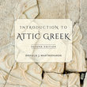

Paradigms
Pronoun Paradigm Index
Go to Noun Paradigms | Go to Adjective Paradigms | Go to Verb Paradigms
Go to Noun Paradigms | Go to Adjective Paradigms | Go to Verb Paradigms
The Definite Article
| | | masc. | fem. | neuter |
| sing. | nom. | ὁ | ἡ | τό |
| | gen. | τοῦ | τῆς | τοῦ |
| | dat. | τῷ | τῇ | τῷ |
| | acc. | τόν | τήν | τό |
| |
| dual | n.a. | τώ | τώ or τά | τώ |
| | g.d. | τοῖν | τοῖν or ταῖν | τοῖν |
| |
| pl. | nom. | οἱ | αἱ | τά |
| | gen. | τῶν | τῶν | τῶν |
| | dat. | τοῖς | ταῖς | τοῖς |
| | acc. | τούς | τάς | τά |
Paradigm index
Personal Pronouns (First and Second Person)
| | | 1st person | 1st person unemphatic | 2nd person | 2nd person unemphatic |
| sing. | nom. | ἐγώ | | σύ | |
| | gen. | ἐμοῦ | μου | σοῦ | σου |
| | dat. | ἐμοί | μοι | σοί | σοι |
| | acc. | ἐμέ | με | σέ | σε |
| |
| dual | n.a. | νώ | | σφώ | |
| | g.d. | νῷν | | σφῷν | |
| |
| pl. | nom. | ἡμεῖς | | ὑμεῖς | |
| | gen. | ἡμῶν | | ὑμῶν | |
| | dat. | ἡμῖν | | ὑμῖν | |
| | acc. | ἡμᾶς | | ὑμᾶς | |
Paradigm index
αὐτός: Third Person Pronoun (oblique cases only) and Intensive Pronoun
| | | masc. | fem. | neuter |
| sing. | nom. | αὐτός | αὐτή | αὐτό |
| | gen. | αὐτοῦ | αὐτῆς | αὐτοῦ |
| | dat. | αὐτῷ | αὐτῇ | αὐτῷ |
| | acc. | αὐτόν | αὐτήν | αὐτό |
| |
| dual | n.a. | αὐτώ | αὐτώ | αὐτώ |
| | g.d. | αὐτοῖν | αὐτοῖν | αὐτοῖν |
| |
| pl. | nom. | αὐτοί | αὐταί | αὐτά |
| | gen. | αὐτῶν | αὐτῶν | αὐτῶν |
| | dat. | αὐτοῖς | αὐταῖς | αὐτοῖς |
| | acc. | αὐτούς | αὐτάς | αὐτά |
Paradigm index
Demonstrative Pronouns (οὗτος, ὅδε)
| | | masc. | fem. | neuter | masc. | fem. | neuter |
| sing. | nom. | οὗτος | αὕτη | τοῦτο | ὅδε | ἥδε | τόδε |
| | gen. | τούτου | ταύτης | τούτου | τοῦδε | τῆσδε | τοῦδε |
| | dat. | τούτῳ | ταύτῃ | τούτῳ | τῷδε | τῇδε | τῷδε |
| | acc. | τοῦτον | ταύτην | τοῦτο | τόνδε | τήνδε | τόδε |
| |
| dual | n.a. | τούτω | τούτω | τούτω | τώδε | τώδε | τώδε |
| | g.d. | τούτοιν | τούτοιν | τούτοιν | τοῖνδε | τοῖνδε | τοῖνδε |
| |
| pl. | nom. | οὗτοι | αὗται | ταῦτᾰ | οἵδε | αἵδε | τάδε |
| | gen. | τούτων | τούτων | τούτων | τῶνδε | τῶνδε | τῶνδε |
| | dat. | τούτοις | ταύταις | τούτοις | τοῖσδε | ταῖσδε | τοῖσδε |
| | acc. | τούτους | ταύτᾱς | ταῦτᾰ | τούσδε | τάσδε | τάδε |
Paradigm index
Demonstrative Pronouns (ἐκεῖνος)
| | | masc. | fem. | neuter |
| sing. | nom. | ἐκεῖνος | ἐκείνη | ἐκεῖνο |
| | gen. | ἐκείνου | ἐκείνης | ἐκείνου |
| | dat. | ἐκείνῳ | ἐκείνῃ | ἐκείνῳ |
| | acc. | ἐκεῖνον | ἐκείνην | ἐκεῖνο |
| |
| dual | n.a. | ἐκείνω | ἐκείνω | ἐκείνω |
| | g.d. | ἐκείνοιν | ἐκείνοιν | ἐκείνοιν |
| |
| pl. | nom. | ἐκεῖνοι | ἐκεῖναι | ἐκεῖνᾰ |
| | gen. | ἐκείνων | ἐκείνων | ἐκείνων |
| | dat. | ἐκείνοις | ἐκείναις | ἐκείνοις |
| | acc. | ἐκείνους | ἐκείνᾱς | ἐκεῖνᾰ |
Paradigm index
Interrogative and Indefinite Pronouns
| | | INTERROGATIVE | | INDEFINITE | |
| | | masc./fem. | neuter | masc./fem. | neuter |
| sing. | nom. | τίς | τί | τις | τι |
| | gen. | τίνος (τοῦ) | τίνος (τοῦ) | τινός (του) | τινός (του) |
| | dat. | τίνῐ (τῷ) | τίνῐ (τῷ) | τινί (τῳ) | τινί (τῳ) |
| | acc. | τίνᾰ | τί | τινά | τι |
| |
| dual | n.a. | τίνε | τίνε | τινέ | τινέ |
| | g.d. | τίνοιν | τίνοιν | τινοῖν | τινοῖν |
| |
| pl. | nom. | τίνες | τίνᾰ | τινές | τινά (ἄττᾰ) |
| | gen. | τίνων | τίνων | τινῶν | τινῶν |
| | dat. | τίσῐ(ν) | τίσῐ(ν) | τισί(ν) | τισί(ν) |
| | acc. | τίνᾰς | τίνᾰ | τινάς | τινά (ἄττᾰ) |
Paradigm index
Relative Pronoun
| | | masc. | fem. | neuter |
| sing. | nom. | ὅς | ἥ | ὅ |
| | gen. | οὗ | ἧς | οὗ |
| | dat. | ᾧ | ᾗ | ᾧ |
| | acc. | ὅν | ἥν | ὅ |
| |
| dual | n.a. | ὥ | ὥ | ὥ |
| | g.d. | οἷν | οἷν | οἷν |
| |
| pl. | nom. | οἵ | αἵ | ἅ |
| | gen. | ὧν | ὧν | ὧν |
| | dat. | οἷς | αἷς | οἷς |
| | acc. | οὕς | ἅς | ἅ |
Paradigm index
Indefinite Relative and Indirect Interrogative Pronoun
| | | masc. | fem. | neuter |
| sing. | nom. | ὅστις | ἥτις | ὅ τι |
| | gen. | οὗτινος (ὅτου) | ἧστινος | οὗτινος (ὅτου) |
| | dat. | ᾧτινι (ὅτῳ) | ᾗτινι | ᾧτινι (ὅτῳ) |
| | acc. | ὅντινᾰ | ἥντινᾰ | ὅ τι |
| |
| dual | n.a. | ὥτινε | ὥτινε | ὥτινε |
| | g.d. | οἷντινοιν | οἷντινοιν | οἷντινοιν |
| |
| pl. | nom. | οἵτινες | αἵτινες | ἅτινᾰ (ἅττᾰ) |
| | gen. | ὧντινων (ὅτων) | ὧντινων | ὧντινων (ὅτων) |
| | dat. | οἷστισι(ν) (ὅτοις) | αἷστισι(ν) | οἷστισι(ν) (ὅτοις) |
| | acc. | οὕστινᾰς | ἅστινᾰς | ἅτινᾰ (ἅττᾰ) |
Paradigm index
Reflexive Pronouns: first and second person
| | | 1st pers. masc. | 1st pers. fem. | 2nd pers. masc. | 2nd pers. fem. |
| sing. | gen. | ἐμαυτοῦ | ἐμαυτῆς | σεαυτοῦ (σαυτοῦ) | σεαυτῆς (σαυτῆς) |
| | dat. | ἐμαυτῷ | ἐμαυτῇ | σεαυτῷ (σαυτῷ) | σεαυτῇ (σαυτῇ) |
| | acc. | ἐμαυτόν | ἐμαυτήν | σεαυτόν (σαυτόν) | σεαυτήν (σαυτήν) |
| |
| pl. | gen. | ἡμῶν αὐτῶν | ἡμῶν αὐτῶν | ὑμῶν αὐτῶν | ὑμῶν αὐτῶν |
| | dat. | ἡμῖν αὐτοῖς | ἡμῖν αὐταῖς | ὑμῖν αὐτοῖς | ὑμῖν αὐταῖς |
| | acc. | ἡμᾶς αὐτούς | ἡμᾶς αὐτάς | ὑμᾶς αὐτούς | ὑμᾶς αὐτάς |
Paradigm index
Reflexive Pronouns: third person
| | | masc. | fem. | neuter |
| sing. | gen. | ἑαυτοῦ (αὑτοῦ) | ἑαυτῆς (αὑτῆς) | ἑαυτοῦ (αὑτοῦ) |
| | dat. | ἑαυτῷ (αὑτῷ) | ἑαυτῇ (αὑτῇ) | ἑαυτῷ (αὑτῷ) |
| | acc. | ἑαυτόν (αὑτόν) | ἑαυτήν (αὑτήν) | ἑαυτό (αὑτό) |
| |
| pl. | gen. | ἑαυτῶν (αὑτῶν) | ἑαυτῶν (αὑτῶν) | ἑαυτῶν (αὑτῶν) |
| | dat. | ἑαυτοῖς (αὑτοῖς) | ἑαυταῖς (αὑταῖς) | ἑαυτοῖς (αὑτοῖς) |
| | acc. | ἑαυτούς (αὑτούς) | ἑαυτάς (αὑτάς) | ἑαυτά (αὑτά) |
Paradigm index
Indirect Reflexive Pronoun: third person
| | sing. (all genders) | | pl. masc./fem. | | pl. neuter | |
| gen. | οὗ | (οὑ) | σφῶν | | σφῶν | |
| dat. | οἷ | (οἱ) | σφίσι(ν) | (σφισι[ν]) | σφίσι(ν) | (σφισι[ν]) |
| acc. | ἕ | (ἑ) | σφᾶς | (σφας) | σφέα | (σφεα) |
Paradigm index
Reciprocal Pronoun
| | | masc. | fem. | neuter |
| dual | g.d. | ἀλλήλοιν | ἀλλήλαιν | ἀλλήλοιν |
| | acc. | ἀλλήλω | ἀλλήλᾱ | ἀλλήλω |
| |
| pl. | gen. | ἀλλήλων | ἀλλήλων | ἀλλήλων |
| | dat. | ἀλλήλοις | ἀλλήλαις | ἀλλήλοις |
| | acc. | ἀλλήλους | ἀλλήλᾱς | ἄλληλᾰ |
Paradigm index
τοιοῦτος (τοσοῦτος)
| | | masc. | fem. | neuter |
| sing. | nom. | τοιοῦτος | τοιαύτη | τοιοῦτον or τοιοῦτο |
| | gen. | τοιούτου | τοιαύτης | τοιούτου |
| | dat. | τοιούτῳ | τοιαύτῃ | τοιούτῳ |
| | acc. | τοιοῦτον | τοιαύτην | τοιοῦτον or τοιοῦτο |
| |
| dual | n.a. | τοιούτω | τοιούτω | τοιούτω |
| | g.d. | τοιούτοιν | τοιούτοιν | τοιούτοιν |
| |
| pl. | nom. | τοιοῦτοι | τοιαῦται | τοιαῦτᾰ |
| | gen. | τοιούτων | τοιούτων | τοιούτων |
| | dat. | τοιούτοις | τοιαύταις | τοιούτοις |
| | acc. | τοιούτους | τοιαύτᾱς | τοιαῦτᾰ |
Paradigm index